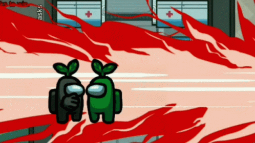
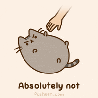
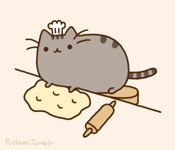
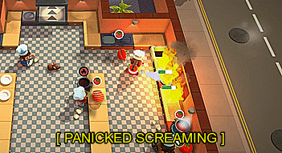
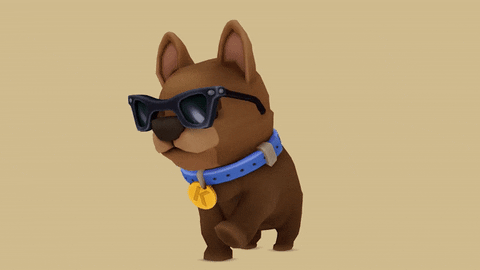

Life has become mundane with the constant maintenance of the ship. Always surrounded by a bleak view of the world and making sure the oxygen levels are sufficient can lead to psychological trauma or illness . It's no wonder I started to hallucinate murdering my fellow crewmates with a variety of weapons . I could shoot them in the head, literally stab their backs or simply snap their necks. As a matter of fact, I deem this life not worth living anymore. I'm going to sabotage the lights and murder my crewmates. If I don't manage to kill everybody , the lack of oxygen I'm going to tamper with should do the trick . I wonder if anybody will know and what they plan to do with a murderer in their midst , their only recourse is probably to just throw me out into space . Let the game begin. 
I would give her all my treasures , my fortunes , even my undergarments are hers. Although it's such a hefty price to pay, I never regret it. I always find gourmet cuisines for her every consumption , focus on her whenever she requests my attention , attend to her every necessity . I brush her whenever she's too tired to groom herself. However, every time I go in to snuggle her, she smacks my face away. When I go to cuddle her, she whines and wriggles out of my arms. Whenever I strive to obtain her endearment , she coldly repudiates me. Some would classify this as a toxic relationship but I prefer to see it as an undying love. She's the superstar in the family, the priceless diamond we hold dear to our hearts. Love you Meowy. 
Some friends of mine allege I have a certain infatuation with baking. It's generally a great way to assuage stress from life induced struggles. Following straightforward instructions can simulate order and control with a perk of producing scrumptious snacks. Before trying a recipe, I thoroughly research it on the internet and use them as guidelines . I tend to adjust the formula by estimating measurements , substituting ingredients, and creating my own process. Since I'm not a meticulous person, the freedom of customizing the process and ingredients enhances the relaxation . There have been several pleas for me to moderate my baking frenzy , to which I comply with until I encounter more life troubles. Be right back, I have to check on my donuts. 
I could feel the sweltering heat as I entered the kitchen . I put on my chef's hat and greeted my partner who specializes in baking. It's a small family owned restaurant so there's only two of us in the kitchen. Occasionally a part-time worker assists us during particularly busy days. The specialty of our small business is our . The menu changes daily and we only serve a maximum of two dishes for a limit of 10 customers . Our establishment is open from 12:30PM to 12:35PM. We offer seasonal dishes and drinks like hot cocoa, mooncakes and ice cream floats. Additionally, our regular dishes range from hamburgers to sushi. Unfortunately, we experience mishaps like overcooking our meats and vegetables . Uh oh I hear beeping . Don't burn down the kitchen again! 
Word List: